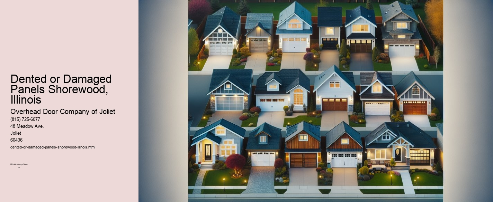

This article needs additional citations for verification. (September 2021) |

Navigating the World of Dented or Damaged Panels in Shorewood, Illinois
Nestled in the heart of Will County, Shorewood, Illinois, is a community that prides itself on its picturesque surroundings and welcoming atmosphere. Like any town, it is not immune to the everyday wear and tear that affects both vehicles and homes. One common issue that residents face is dealing with dented or damaged panels, whether on cars, homes, or commercial properties. This essay will explore the causes, implications, and solutions to dealing with dented or damaged panels in Shorewood, offering insights and practical advice for the community.
The Causes of Dented or Damaged Panels
In Shorewood, as in many parts of the Midwest, the weather plays a significant role in causing damage to panels. The area experiences a full range of seasons, from harsh winters with heavy snow and ice to hot, humid summers. Hailstorms, in particular, are notorious for leaving vehicles and homes with unsightly dents. Additionally, the fluctuating temperatures can cause materials to expand and contract, leading to structural stresses that might result in damage over time.
Aside from weather-related issues, everyday accidents and incidents contribute to panel damage. For vehicles, minor collisions in parking lots or on busy roads can leave noticeable dents.
Implications of Dented or Damaged Panels
While some may view dents or damage as purely cosmetic issues, their implications can be more significant. For vehicles, even small dents can compromise the integrity of the paint, leading to rust and further deterioration if left unaddressed. This not only affects the vehicles appearance but can also decrease its resale value. In homes, damaged panels can lead to reduced energy efficiency, as gaps or holes can allow air to escape or enter, placing an additional burden on heating and cooling systems.
Moreover, the aesthetic impact cannot be overlooked.
Solutions and Resources in Shorewood
Fortunately, residents of Shorewood have access to a variety of resources to address dented or damaged panels. For auto-related issues, several local body shops specialize in dent repair, offering services such as paintless dent removal, which can be a cost-effective and efficient solution for minor dents. These businesses often provide free estimates, helping vehicle owners make informed decisions about repairs.
For homeowners, local contractors and repair services can assess and fix damaged siding or panels. Many of these businesses offer a range of materials and styles to match existing structures, ensuring that repairs blend seamlessly with the original design. Additionally, some companies provide preventative maintenance services, such as protective coatings or regular inspections, to minimize future damage.
Community members can also benefit from local hardware stores and DIY resources, which offer tools and materials for those who prefer to tackle minor repairs themselves. Workshops and online tutorials can empower residents to handle small-scale projects, saving money and providing a sense of accomplishment.
Conclusion
Dealing with dented or damaged panels is a common challenge in Shorewood, Illinois, but it is one that can be effectively managed with the right approach and resources. By understanding the causes and implications of such damage, residents can take proactive steps to maintain their vehicles and properties. With a range of local services and solutions available, Shorewood continues to uphold its reputation as a vibrant, well-maintained community where residents can take pride in their surroundings. Whether through professional repairs or DIY efforts, addressing dented or damaged panels ensures that Shorewood remains a place of beauty and resilience.
Malfunctioning Garage Door Openers Shorewood, IllinoisThis article needs additional citations for verification. (September 2021) |